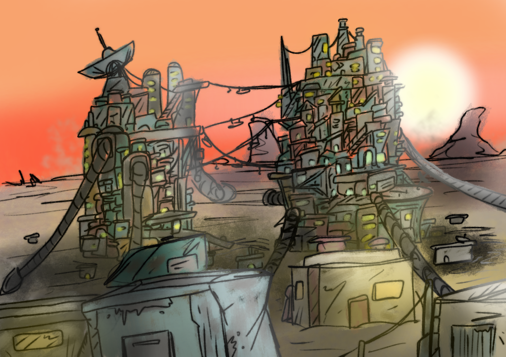

ATLAS is a tabletop RPG system inspired by DND 5e and many other systems. The system has its' own setting and story that comes with it, as well as premade creatures and weapons. ATLAS has been in development for 2 years, and is still being playtested and edited to make the system more engaging and fun.
The point of ATLAS is to make more engaging and difficult combat. Every class and subclass is designed around being overpowered in a certain way. However, health points for both NPCs and players are drastically reduced to make each hit more impactful.
ATLAS takes place in a far away galaxy that has just been settled and is slowly expanding. The current galactic government, the ISF has just finished off a bloody war and is taking active strides in making sure all habitable planets are under their control.
